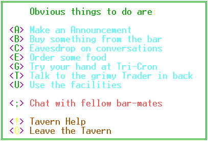

|
Tavern
Command Menu |
|

 Shipyard
Command Menu
Shipyard
Command Menu
|
 Navigation
Console
Navigation
Console
|
 FedPolice
Command Menu
FedPolice
Command Menu
|


 Tavern
Commands
Tavern
Commands
<A>
Make an Announcement
Do you have something
of interest for all the patrons of the tavern? If so, pay the fee
and post your announcement. It will stay there until the next announcement
is posted.
<B>
Buy Something from the Bar
Had a trying day?
Want a little something to soothe your nerves? Order up whatever
your heart desires. You might even get it in a clean glass.
Remember FedLaw says, don't drink and fly.
<C>
Eavesdrop on Conversations
See that group of
individuals gathered at the table in the darkest corner of the tavern?
They seem to be engaged in some very engrossing dialogue. If you
would care to listen in and maybe even add some remarks of your own, use
this option.
<E>
Order Some Food
You really need to
keep your strength up so you can take on the challenges of the cosmos.
Order up the Blue Plate Special (the food is blue, not the plate) and nourish
yourself with some of the most memorable edibles this side of Barlaam.
<G>
Try Your Hand at Tri-Cron
Do you feel lucky,
Punk? Put your money down and see if you can beat the odds.
A simple game of chance might relax you and you never know, you might come
away a big winner. The game is easy - the detailed instructions are
available in the Tavern. The cost of playing is based on the size
of the Top Winner's Jackpot. You'll have 10 rounds against the house.
If you win, the payback is 2 to 1. If you're the top winner, you
receive the accumulated jackpot.
<T>
Talk to the Grimy Trader in Back
Not much to look at,
but he can be a wealth of information. Depending on how many drinks
he's had, his facts may be a bit suspect. Just ask him about a specific
topic, give him a little inducement and he'll tell you what he knows.
If you speak to him respectfully, he'll be fair to you. Otherwise
he might try to take advantage of your need for information. You'll
have to pay dearly for it, but he can sometimes get you information on
specific Traders.
<U>
Use the Facilities
When Mother Nature
calls, this option will allow you to answer. Feel free to read the
graffiti to keep yourself entertained. You can even add some of your
own prose or poetry but beware of what may be lurking in the next stall.
<;>
Chat with fellow bar-mates 
This is a global command
while you're visiting the tavern. Simply type this command, followed
by the text you want others in the tavern to see. You can enter a
multi-line mode by pressing this key and then a carriage return.
Remember that this is a public establishment, so don't say anything you
wouldn't want anyone else to hear. You never know who could be lurking
in the crowd...
<!>
Tavern Help
Display the portion
of the documentation describing the Tavern functions.
<Q>
Leave the Tavern
Exit back to the main
area of the Stardock.
|
Shipyard
Command Menu
|
 Exit
Help
Exit
Help
|
FedPolice
Command Menu
|